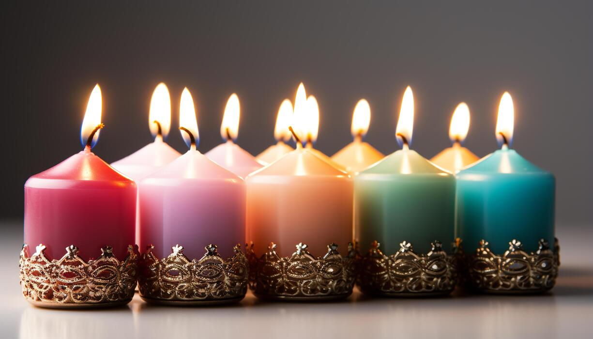

In spirituality , infusing candles in your everyday life can really change the way you feel and manifest things. Fire is a string element and lighting a candle with intention can be a powerful tool .
Now there are several different types of candles , so we are gonna explore the basics together.Each colour has a meaning that reflects in your psychology and makes you feel and therefore manifest in a certain way . Below you're gonna find some of the basic colours and their spiritual power . If you are holding a candle of some specific shape or colour that's not here you can always look it up on the internet and see how you can use it to your own benefit.

Blue it the colour of clarity and healing.It can also be associated with your throat chakra and therefore your way to express yourself openly. So it would be helpful to light a blue candle everytime you're confused or don't know how to express clearly.
Red is the colour of passion , intensity and power . It can be used in a milion ways , as to stimulate motivation, dominance and ruling in your own life. It can be used to manifest love , to spice up an existing relationship or to get a boost of confidence.
Green is the colour of growth , health and stability.It can also signify abundance and renewal.It can be used to manifest money , a new job or an opportunity for a new reality.
Pink is the colour of love , femininity and compassion. Once you decide to do shadow work and begin your self love journey , it's gonna become a necessity. You can create a whole ritual around it , around any candle to be honest . You can light a pink candle while you are doing your skincare , while you are taking a shower , while you are journaling and writing your gratitude thoughts , before a busy day to attract kind behaviours that are gonna help you get through it . It's honestly so helpful if you really deeply connect with it and light it with your purpose.
Orange is for clear ambition and confidence. It also represents creativity and sensuality. This is gonna be helpful to light if you are starting off something creative or if you want to et more in touch with your senses and your intuition.
Purple is the colour of spirituality and wisdom. It can be used to manifest spiritual growth and enlightenment. It can also be used to enhance your intuition and psychic abilities.
White is the colour of purity and protection. It can be used to cleanse your energy and protect you from negative influences. It can also be used to manifest clarity and new beginnings.
Yellow is the colour of joy and optimism. It can be used to manifest happiness and positivity. It can also be used to enhance your mental clarity and focus.